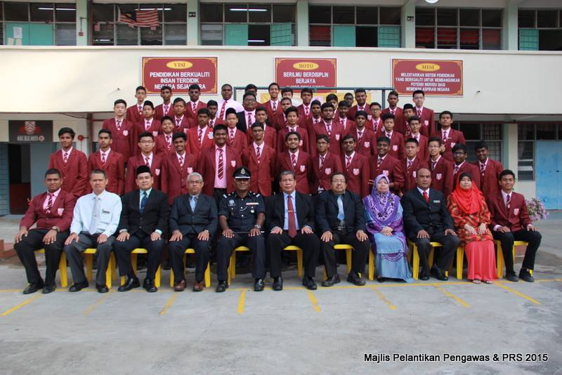

Ahhhh, remember those days back in few years where I enjoying my not so stressful life of secondary school in SMK Kajang Utama. Those were some of the memorable days during. However, Today I will be going through chronological order about my education life.
Kindergarten
My first kindergarten started at Intellectual Kindergarten where I was taught on speaking Mandarin (Which I can't remember anything), English and dancing class. That was also one of the moment where I was introduced to multi-cultural tradition with indian and chinese friends.
At the same time, I was going to KAFA. An Islamic kindergarten aimed to make sure that all Muslims child are educated in Islamic teachings. Unfortunately, I don't have enough memory of the place due to my nomadic condition to travel between two home everyday.
Primary School
During my primary school, I studied at SK Seri Cheras. I do not have sweet memories regarding the place since I was constantly bullied by my classmate. Adding fire to the wound, that is also the time where my father has passed away.
Entering second year, i was transferred to SK Sri Al-Amin Bangi which is also an Islamic school. I studies there but my performance in academic is not very good since I was being too lazy to study at the time. I studied there for 2 years only.
When my age entered 10 years old a.k.a. year 4 of primary school, I studied at SK Kajang Utama with some wonderful friends and teachers. Some of my teachers teach me until I was able to be a master at mathematics. At the time, I become more focused on my UPSR and my curiculum activities. I was appointed as the school representative in Al-Quran memorization competition.
Everyone's experience is difference
Secondary School
With my excellent result, I was accepted as a high school student and become a hostel resident of the school. First year of being a resident, I cry a lot because of my crybaby behavior and homesick. However as years goes on, I adapt to the situation and improve myself to become a better person that can be independent. During that time, I applied to be the school prefect (Which I successfully achieved) and do my task dutifully. Below is the picture of my batch of being a prefect in High School Kajang (Try find me if you can).
To fully explore and take advantage, that is what life is...In 2016, I transferred to SMK Kajang Utama, the closest school near to my home. Everyday, I would cycle myself toward the school and attend class in the morning. I was also appointed as prefect during my time learning there. I choose accounting stream (which is very difficult) as one of the option provided. I learn hard for my SPM which it finally paid off with 4As and 5Bs.
University
And now, here I am, a proud student of UITM Rembau in the faculty of Information Management. I'm currently at my last semester and set to finish my last semester at jan-feb 2021.